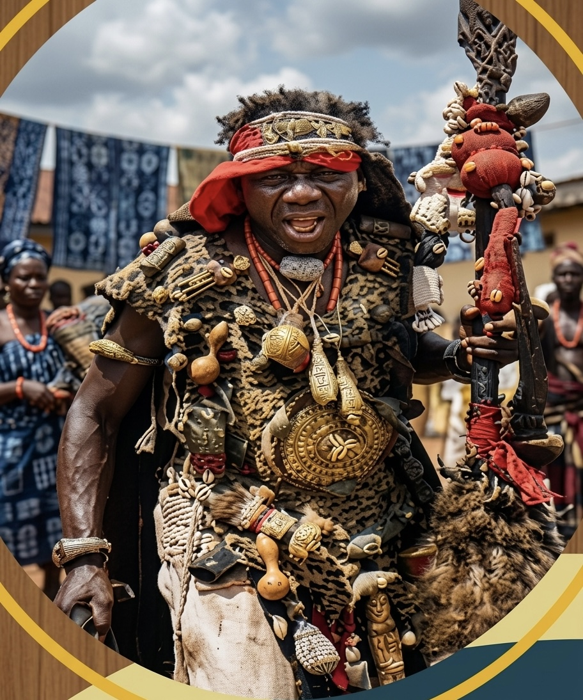

Olawolu “Onibudo” was a renowned Ibadan warrior (jagun-jagun Ibadan) of noble Yoruba ancestry. He was born in Oyo to Prince Adeyanju, son of Alaafin Abiodun Adegoolu, who reigned over the Old Oyo Empire from 1770–1789.
Onibudo was the younger brother of Toki, also known as Omotoki or Erintoki. Although they shared the same father, they were born by different mothers. Onibudo’s mother was a princess (omo oba) from Shaki, while Toki’s mother was a princess from Ile-Igbon.
Prince Adeyanju was next in line to become Alaafin of Oyo. Before his installation, he consulted Ifa (difa), and the oracle revealed that he would enjoy a peaceful reign if certain sacrifices (ebo) were performed.
Unfortunately, before the sacrifices could be completed, he became gravely ill. Realizing he might not survive, he instructed his wives to return with their children to their maternal hometowns for safety, protection, and proper upbringing.
It was from these maternal hometowns that both brothers survived, grew into adulthood, became warriors (akinkanju jagun), and later migrated to Ibadan during the era of the Yoruba jihads and inter-tribal wars.
Toki arrived in Ibadan before his younger brother and became established around the Ayeye and Alekuso areas. About five months later, Olawolu Onibudo joined him.
Historical references from Iwe Itan Ibadan confirmed that both Toki and Onibudo were among the warriors who participated in the re-establishment of the third Ibadan around 1810 after the destruction caused by the Owu War (Ogun Owu).
The historical account listed notable warriors from Oyo, Osun, Ife, Ijebu, and Egba who settled permanently in Ibadan, including Oluyedun, Oluyole, Babalola, Oderinlo, Opeagbe, Lakanle, Toki, Olupoyi, Onibudo, and Ayeye.
During the reign of Basorun Oluyole, Onibudo became recognized as one of the fearless and influential warriors in Ibadan. Historical records described him among “Awon akikanju ti ko se e fowo ro seyin” — Brave men who could not be ignored.
Onibudo fought in several major Yoruba wars. These wars were fought alongside Toki, his elder brother, and Ibikunle, the famous warrior who later joined them:
Ibikunle originally came from Ogbomoso and arrived in Ibadan as a warrior (omo ogun). He was introduced to Toki and Onibudo by Aragba and joined their military expeditions.
Historical accounts later described Ibikunle as “Kiniun Onibudo” (The Lion of Onibudo). The title reflected his bravery (akinkanju), loyalty, and military strength within Onibudo’s war camp (budo ija).
The name “Onibudo” itself was derived from Olawolu’s remarkable ability in establishing and defending war camps during military expeditions. The phrase “A sure pa budo ija” was associated with his tactical strength in constructing and protecting military camps.
Ibikunle later rose to become Balogun (Military Commander) of Ibadanland and eventually became one of the greatest military leaders in Ibadan history.
Both brothers maintained separate military bases (Idi Ogun) around the Oke Ayeye area of Ibadan. Toki’s Idi Ogun was located near the present-day public borehole at Oke Ayeye, while Onibudo’s Idi Ogun was located around the junction of Idikan and Opoyeosa.
Historical records described Ile Toki Onibudo as one of the foundational noble compounds (ile ola) in Ibadan. After Onibudo’s death, leadership passed to Ibikunle according to the warrior tradition of the time: “Bi jagun-jagun ba ku, olori omo ogun re ni awon ilu fi n ropo re.”
| Notable Successors | Title |
|---|---|
| Toki Onibudo | No Chieftaincy Title |
| Ibikunle | Balogun Ibadan |
| Oluokun | Ekefa Seriki |
| Olugbodi | Mogaji |
The house of Ibikunle became one of the most respected compounds in Ibadan history. “Koi ti si Balogun bi Ibikunle ni ilu Ibadan titi di oni.”
| Notable Successors | Title |
|---|---|
| Ibikunle | Balogun |
| Kuejo | Mogaji |
| Oyewo | Aareago Balogun |
| Iyapo | Seriki |
| Akintola | Balogun |
| Oyedeji | Osi Balogun |
| Akinola | Ekerin Balogun |
| Madandola | Otun Balogun |
Ile Yeosa was also recognized as one of the largest and most influential compounds in Ibadan.
| Notable Successors | Title |
|---|---|
| Yeosa | Ekerin Iba Oluyole |
| Oyeniwe | Aareago |
| Olojede | Mogaji |
| Ojebiyi | Mogaji |
| Oke | Mogaji |
Onibudo was an exceptional warrior whose courage, leadership, and military wisdom contributed greatly to the survival and expansion of Ibadan after the devastating Owu War. Unlike many who fled, Onibudo remained and became one of the warriors who helped establish the third Ibadan — the same Ibadan that exists today.
The histories of the Toki, Onibudo, and Ibikunle families remain deeply connected through shared ancestry, military heritage, and contributions to the development of Ibadanland.
Today, these families continue to represent an important part of Ibadan’s historical and cultural foundation. Their unity (isokan), cooperation, and preservation of Yoruba heritage remain essential for sustaining the legacy left behind by their ancestors. As descendants of these great warriors (omo jagun nla), preserving this history ensures that future generations will continue to remember the sacrifices, courage, and leadership that helped shape modern Ibadan.

Jagun-jagun Ibadan